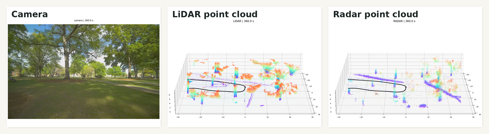
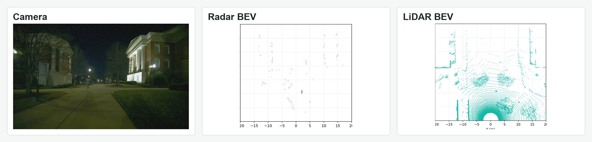
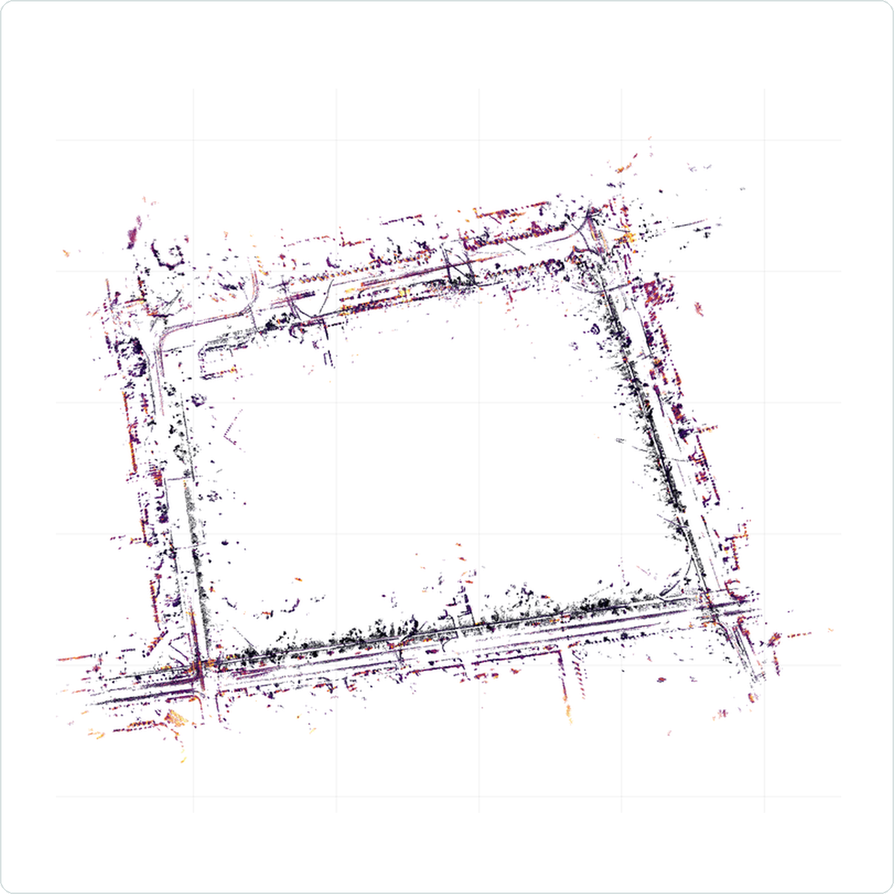
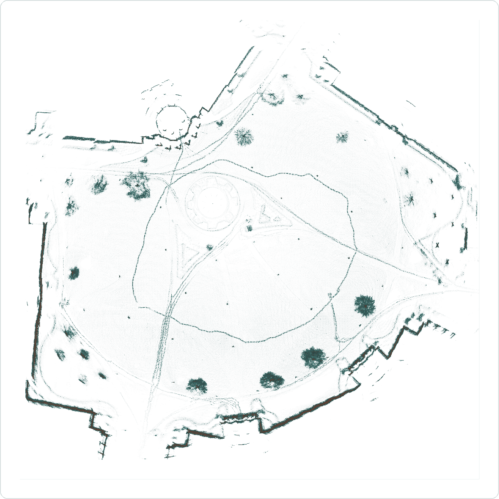

Multi-Sensor SLAM
Camera, LiDAR, radar, IMU/INS, and wheel-feedback integration for outdoor UGV experiments in visually and GNSS-degraded scenes.
PhD Student · Robotics and SLAM
I work on robot perception, multi-sensor SLAM, and field evaluation for UGVs in challenging outdoor environments.
Research Interests
Camera, LiDAR, radar, IMU/INS, and wheel-feedback integration for outdoor UGV experiments in visually and GNSS-degraded scenes.
Module-level improvements to learning-based radar odometry, preserving the original pose path while adding interpretable correspondence supervision.
Reusable Linux/Python tools for bag processing, sensor validation, trajectory analysis, runtime profiling, and result visualization.
Selected Work
UA-BGU project
Built a ROS2-based UGV pipeline for synchronized camera, LiDAR, 4D radar, INS/RTK, and wheel-feedback data in low-light and GNSS-degraded field runs. The work includes LiDAR map filtering, soft-anchor localization, radar/IMU fusion, and trajectory evaluation against INS/RTK references.
MathWorks project
Extended a learning-based 4D radar odometry pipeline for sparse radar point clouds, with range/intensity pre-filtering, point-multiplication experiments, camera-pose fusion, and lightweight pseudo-correspondence supervision. The ablations keep the pose backbone controlled while evaluating correspondence and refinement gains.
Figures and Videos
Selected private research figures and clips from field evaluation and mapping workflows.




Sequential middle segments from private UGV recordings, compressed to 5-8x speed.
CV and Contact